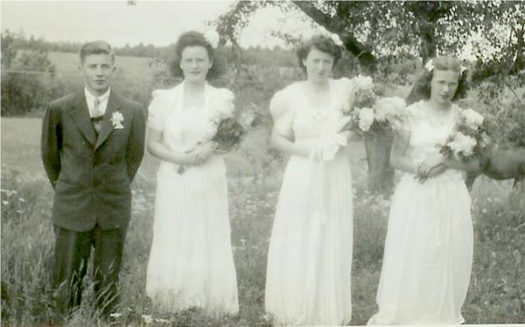

The Family Chronicle
No. 83 November 20 , 2004
________________

MRHS Graduation 1945
From left: George Watling, Joan MacDonald, Mary MacDonald and Frances MacLean
George Watling tells me that the above
photo was taken at the home of Frances MacLean. Perley Quayle, Principal of MRHS, drove the graduates to the MacLean home in his Model A Coupe. George rode in the rumble seat.
Note: I would be delighted to receive graduation photos for 1941, 1943 and 1944 to run in future issues of the Chronicle.
Clothes (Cont’d)
Rubber boots were standard wear around the barn (Work boots were for farming, haying, working on the boats, etc). Rubber boots were knee high and had a narrow red band around the top – perhaps a half-inch wide. One of the weak areas of rubber boots was at the ankles. Presumably because of the frequent flexing, boots often cracked there.
Gumboots were standard wear for fall, winter and spring. They were made like rubber boots only ankle high. Obviously the snow would get in winter and wet feet soon smelled.
Finally, I recall my real leather winter boots, which laced up and were higher than gumboots. The snow and wet were hard on them and one treated them regularly with a paste wax – Skowhegan, as I recall. This kept the leather soft but also made them more waterproof.
An earlier Chronicle dealt with the heavy woolen pants of winter and especially the high quality of Humphrey pants.
We always wore long underwear, long johns, in winter. Some were two –piece and some were one-piece. Woolen were best because they absorbed the sweat but they were very itchy. Some men wore long woolen underwear both summer and winter. They said that the wool kept them cool in the summer and warm in the winter. I’m not convinced It seems as though I usually had fleece-lined long johns. Of course, all long johns came equipped with a small front entrance and a large trap door in the rear.
Hands were covered with mitts when the weather warranted. Mother knitted mitts and socks for all of us. Depending on what else she was doing, she could knit a pair of socks in a day while she was “resting”.
I often think of the hard work for mother just washing and cleaning all of our clothes when water was pumped by hand, heated on a wood stove, washed by hand, rinsed with a hand operated wringer, hung to dry on a clothesline outdoors and ironed where necessary again by hand.
Black River was served primarily by the New Brunswick Telephone Company; on the other side of the Little Branch River and all the way to Escuminac, phone service was provided by the “Government line”.
The Government Line always seemed to be out of order. That meant that people from down river frequently came to our house to use the phone; that also meant that emergency phone calls often came to our place with a request that they be delivered. I cannot ever remember delivery being refused. In fact, I remember delivering a phone message to someone up Bay du Vin River over very wet, muddy and rutted spring roads.
Ours was a party line; our number was 1900-4 – nineteen hundred ring four. Nineteen hundred was the exchange; 4 was the ring. When the phone rang four short rings, we knew to pick it up. Double-digit numbers were rung by dialing long and short rings. Number twenty-four, for example, would be two long rings and four short rings.
The phone itself was a box about 10 inches wide, 20 inches high and six inches deep. The receiver hung on a y-hook; you lifted the receiver off the hook and held it to your ear. The phone was battery powered – two C batteries as I recall. Once or twice a year, telephone maintenance men changed the batteries.
When the phone rang, it was possible to pick up the phone and listen to both sides of the conversation. This was a great way to catch up on the news and prevented secrets in the community. In case of an emergency, such as a fire, a continuous ring would be heard to alert the neighbours.
The story is told of a neighbour who tied the receiver to her rocking chair each time she sat down to rest. The Telephone Company threatened to disconnect a phone if someone listened in on a conversation although I never heard of that happening except in the above instance.
The Chronicle is an occasional newsletter prepared by Don Glendenning and posted on the family website. It is designed to share information about my family, community and the times in which I grew up. While every effort is made to be accurate, errors are likely to occur. Comments, enquiries and information may be sent to 62 Queen Elizabeth Drive, Charlottetown, PEI, C1A 3A9. Tel: 902-892-5859 Email: dglende@auracom.com Web: www.glendenning.net